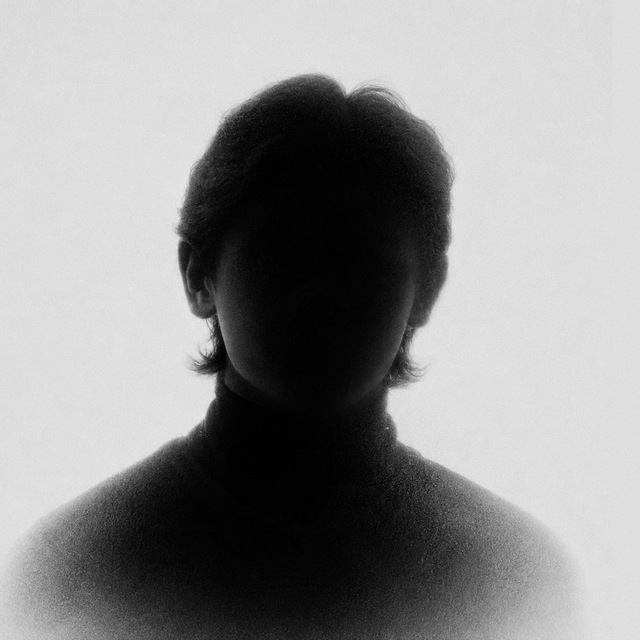

by Meyor Vision
Ovozdan SRT yaratish uchun repo ichida python3 subtitles/cli.py --input video.mp4 --output video.uz.srt ni ishga tushiring. So‘ng SRT’ni import qiling.
python3 subtitles/cli.py --input video.mp4 --output video.uz.srt